Actividad 19: Los Primeros Minutos Cuentan — Recolección Forense de Evidencia Volátil en Vivo
Introducción
En la respuesta a incidentes de ciberseguridad (Incident Response), los primeros minutos posteriores a la detección de un compromiso son determinantes. Cuando un investigador forense actúa como primer respondiente frente a un sistema encendido (sistema en caliente), apagar el equipo de forma abrupta provoca la pérdida irreversible de toda la evidencia volátil almacenada en memoria RAM y en las tablas dinámicas del kernel.
Siguiendo el Principio del Orden de Volatilidad establecido en el estándar IETF RFC 3227 y la guía ISO/IEC 27037, la recolección de evidencia debe ejecutarse desde los datos más efímeros hacia los más persistentes:
- Reloj del sistema, procesos en ejecución, servicios activos y sesiones de usuario iniciadas.
- Estado de las interfaces de red, conexiones TCP/UDP abiertas, puertos asociados a binarios, caché DNS, tabla ARP y tablas NetBIOS.
- Historial de comandos en consola, unidades de red mapeadas y recursos compartidos.
- Configuración general del sistema, tareas programadas, registros de eventos (
.evtx), archivohostsy metadatos temporales del sistema de archivos (timestamps de creación).
Documentación del Triage en Vivo
1. Obtenga la fecha y hora del sistema.
Comando ejecutado: date
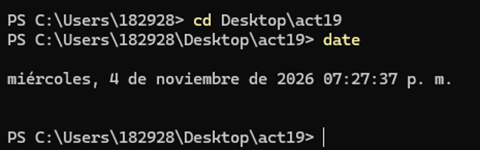
2. Obtenga un listado de los procesos en ejecución.
Comando ejecutado: tasklist
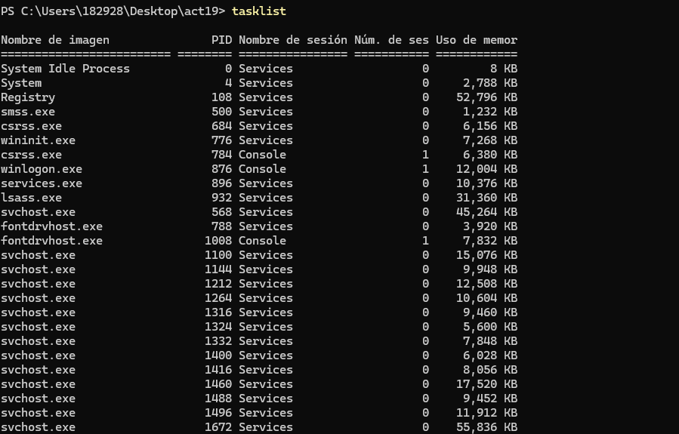
3. Obtenga los servicios del dispositivo de análisis desde el símbolo del sistema y después desde PowerShell. ¿Qué diferencias aprecia? ¿Cuál es su análisis respecto al resultado?
El comando de net start únicamente muestra una lista plana de texto con los nombres descriptivos de los servicios que se encuentran actualmente iniciados, omitiendo los servicios detenidos. Además, muestra bloques extensos de texto, pero solo de servicios activos por defecto. En cambio, el comando Get-Service devuelve objetos estructurados, listando tanto los servicios en ejecución (Running) como los detenidos (Stopped) junto con su nombre corto e identificador real.
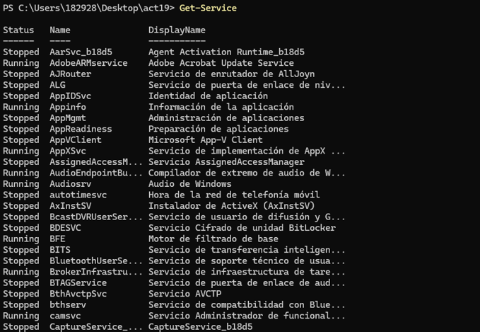
Get-Service).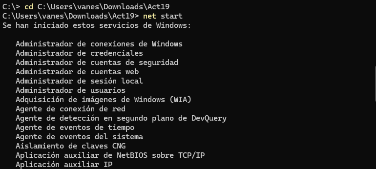
net start).4. Obtenga un listado de los usuarios que se encuentran actualmente logueados en el sistema comprometido.
Comando ejecutado: query user
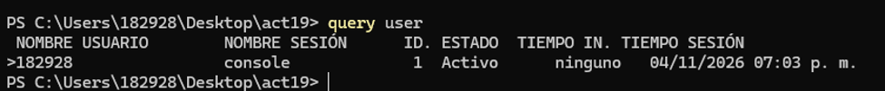
5. Obtenga un listado de los usuarios que alguna vez se loguearon en el sistema comprometido.
Comando ejecutado: .\NetUsers.exe /local /history
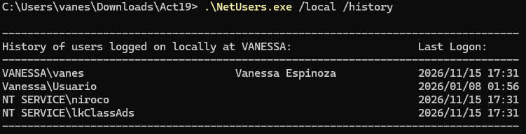
6. Obtenga la información de la red del sistema comprometido.
Comando ejecutado: ipconfig /all
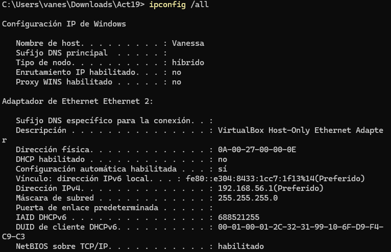
7. Identifique los nombres asignados por NetBIOS en el sistema comprometido.
Comando ejecutado: nbtstat -n
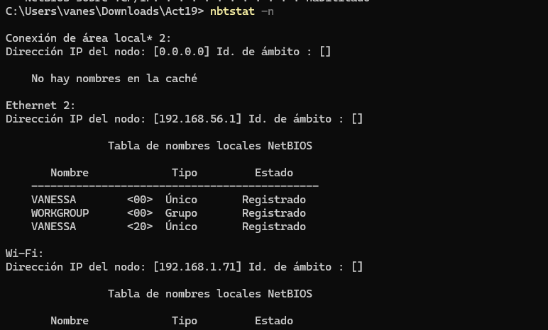
8. Obtenga las conexiones establecidas en el sistema vulnerado.
Comando ejecutado: netstat -ano
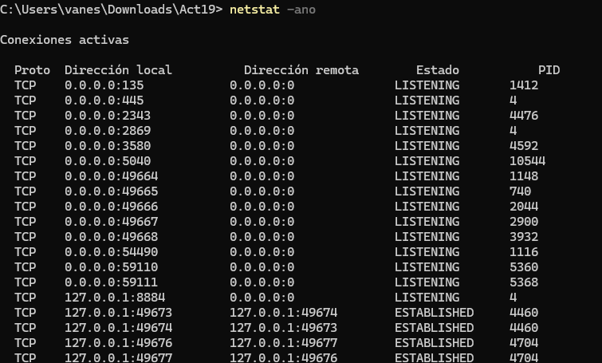
9. Obtenga la relación de las aplicaciones abiertas con el puerto de comunicación establecido en el sistema comprometido.
Comando ejecutado: netstat -abno
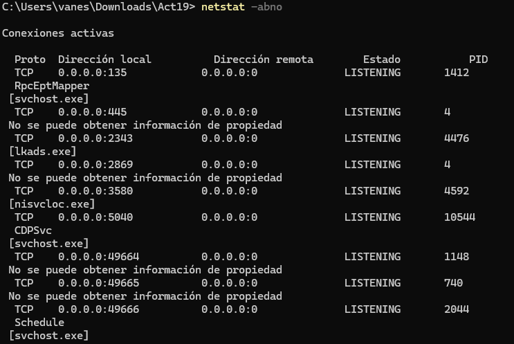
10. Identifique los dominios a los que se ha accedido desde el ordenador en investigación.
Comando ejecutado: ipconfig /displaydns
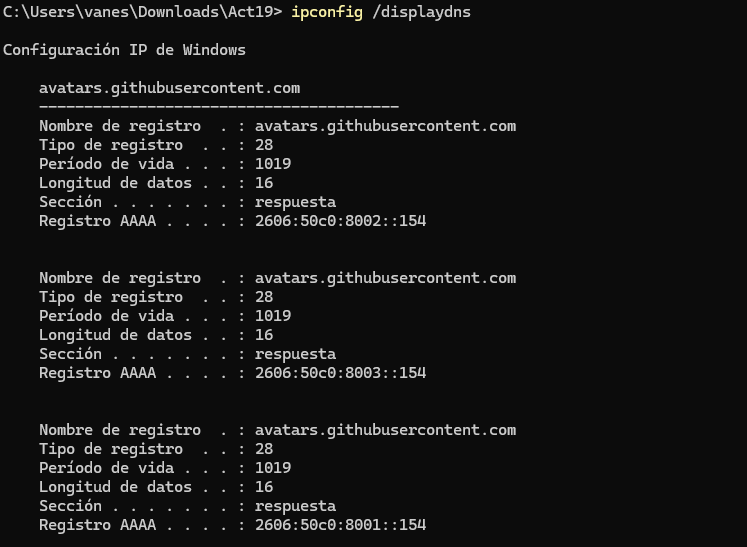
11. Obtenga la información almacenada de comunicación entre la dirección física y la dirección lógica del equipo con los que se haya comunicado recientemente el dispositivo en investigación.
Comando ejecutado: arp -a
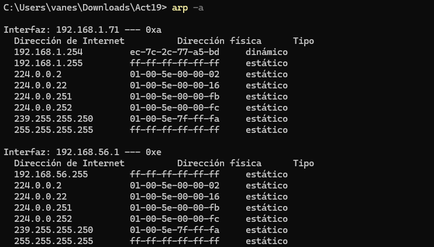
12. Obtenga un listado de redes WiFi a las que se ha conectado el equipo comprometido.
Comando ejecutado: netsh wlan show profiles
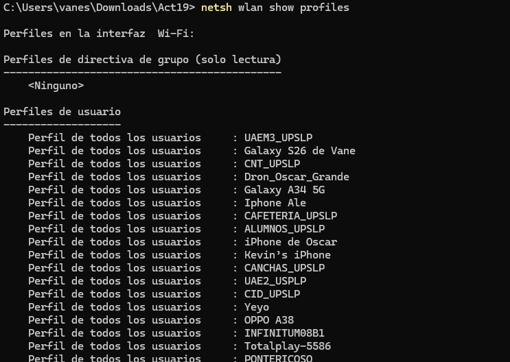
13. Recabe el histórico del intérprete de comandos que se han ejecutado en el sistema de análisis.
Comando ejecutado: Get-History
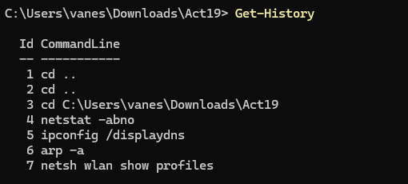
14. Visualice las unidades mapeadas en el sistema de investigación.
Comando ejecutado: net use
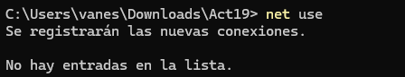
15. Obtenga los recursos compartidos del sistema en análisis.
Comando ejecutado: net share
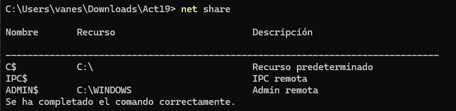
16. Obtenga la información relacionada del equipo comprometido.
Comando ejecutado: systeminfo
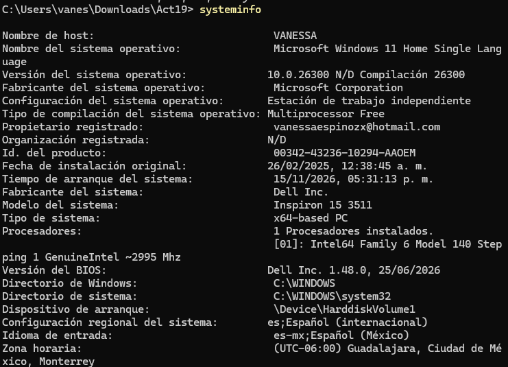
17. Recupere las tareas programadas en el sistema operativo de análisis.
Comando ejecutado: schtasks
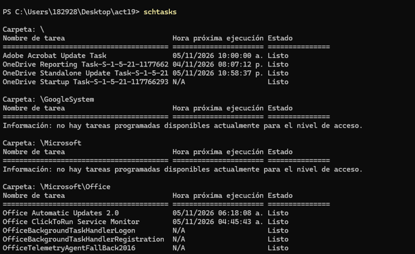
18. Exporte los logs de los registros del sistema para su posterior análisis en la ubicación de Escritorio del usuario en investigación.
Comando ejecutado: wevtutil epl Application "C:\Users\vanes\OneDrive\Documentos\Escritorio\Application_log.evtx"
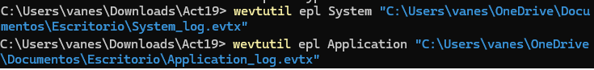
19. Obtenga el fichero Host del sistema comprometido para su posterior análisis.
Comando ejecutado: type C:\Windows\System32\drivers\etc\hosts
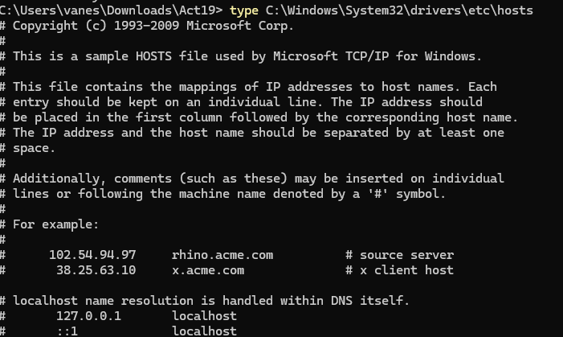
20. Obtenga el listado con base a la fecha de creación del árbol de directorios y ficheros del sistema operativo comprometido.
Comando ejecutado: dir /t:c /o:d /s
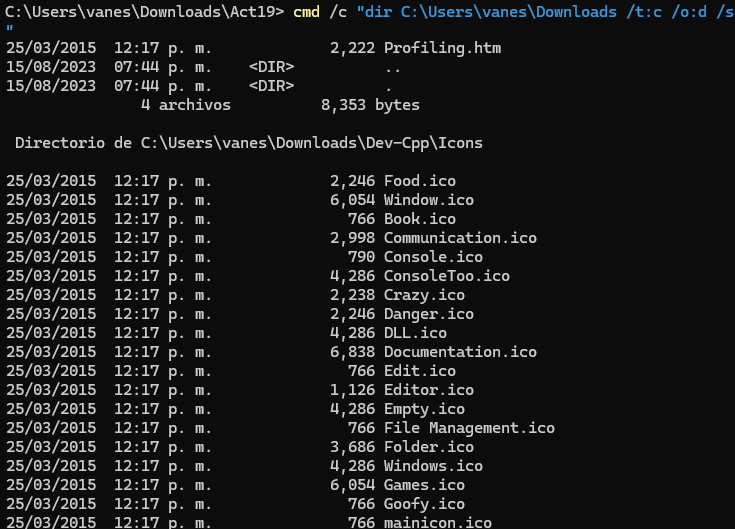
Resultados Consolidados y Valor Forense
| # | Paso de Adquisición | Comando Ejecutado | Resultado Obtenido en el Sistema | Importancia Forense de la Pieza de Evidencia |
|---|---|---|---|---|
| 1 | Fecha y hora del sistema | date (Get-Date) |
miércoles, 4 de noviembre de 2026 07:27:37 p. m. | Establece la marca temporal de referencia (baseline) del reloj del sistema al iniciar la intervención. Permite correlacionar todos los registros posteriores con la hora real (UTC) y detectar manipulaciones del reloj del sistema. |
| 2 | Procesos en ejecución | tasklist |
Listado activo en memoria (System PID 4, Registry PID 108, smss.exe PID 500, csrss.exe PID 684/784, winlogon.exe PID 876, lsass.exe PID 932 y múltiples instancias de svchost.exe). |
Permite identificar ejecutables maliciosos activos en RAM, procesos huérfanos, inyección en procesos del sistema (svchost.exe, lsass.exe), su PID, el tipo de sesión (Services vs Console) y su consumo de memoria. |
| 3 | Servicios del sistema (CMD vs PowerShell) | Get-Service (PS) y net start (CMD) |
En PS se observan servicios activos y detenidos (AarSvc_b18d5 Stopped, AdobeARMservice Running, AppIDSvc Stopped, Audiosrv Running, BFE Running). En CMD solo se listan los nombres descriptivos de servicios iniciados. |
Los atacantes suelen instalar servicios del sistema para garantizar la persistencia con privilegios SYSTEM. Auditar tanto servicios activos como detenidos permite descubrir puertas traseras latentes. |
| 4 | Usuarios actualmente logueados | query user |
Usuario activo: >182928, Sesión: console, ID: 1, Estado: Activo, Tiempo de inicio: 04/11/2026 07:03 p. m. |
Revela si existen sesiones simultáneas activas o desconectadas en el equipo (por ejemplo, un intruso conectado vía Escritorio Remoto RDP paralelamente al usuario local). |
| 5 | Historial de usuarios que se loguearon alguna vez | .\NetUsers.exe /local /history |
En host VANESSA: VANESSA\vanes (2026/11/15 17:31), Vanessa\Usuario (2026/01/08 01:56), y cuentas de servicio NT SERVICE\niroco y NT SERVICE\lkClassAds (2026/11/15 17:31). |
Permite auditar cuentas históricas que han autenticado en el sistema, detectando cuentas creadas por atacantes para persistencia, cuentas inactivas reutilizadas o inicios de sesión en horarios anómalos. |
| 6 | Información de red del sistema | ipconfig /all |
Host: Vanessa. Adaptador VirtualBox Host-Only Ethernet Adapter: MAC 0A-00-27-00-00-0E, IPv4 192.168.56.1, Máscara 255.255.255.0, NetBIOS habilitado. Interfaz Wi-Fi: 192.168.1.71. |
Documenta la identidad lógica (IP) y física (MAC) de todas las tarjetas de red físicas y virtuales, servidores DNS/DHCP y puertas de enlace, permitiendo detectar configuraciones de red alteradas o adaptadores virtuales ocultos. |
| 7 | Nombres asignados por NetBIOS | nbtstat -n |
En 192.168.56.1 y 192.168.1.71: VANESSA <00> (Único - Estación de trabajo), WORKGROUP <00> (Grupo), y VANESSA <20> (Único - Servicio de servidor de archivos activo). |
Identifica cómo se anuncia el equipo en la red local mediante NetBIOS. El sufijo hexadecimal <20> confirma que el servicio de compartición de archivos se encuentra registrado y activo en la red. |
| 8 | Conexiones de red establecidas | netstat -ano |
Puertos en escucha (LISTENING): 135 (PID 1412), 445 (PID 4), 2343 (PID 4476), 2869 (PID 4), 3580 (PID 4592), 5040 (PID 10544), 8884 (PID 4). Conexiones ESTABLISHED en loopback 127.0.0.1:49673-49677 (PIDs 4460 y 4704). |
Captura en tiempo real todas las sesiones de red activas y puertos abiertos junto con su PID, permitiendo identificar canales de Comando y Control (C2), shells reversas o túneles locales. |
| 9 | Relación de aplicaciones abiertas con puertos | netstat -abno |
Puerto 135: RpcEptMapper [svchost.exe] (PID 1412); Puerto 2343: [lkads.exe] (PID 4476); Puerto 3580: [nisvcloc.exe] (PID 4592); Puerto 5040: CDPSvc [svchost.exe] (PID 10544); Puerto 49666: Schedule [svchost.exe] (PID 2044). |
Vincula directamente cada socket de red abierto con el ejecutable exacto en disco y servicio asociado, facilitando distinguir entre tráfico legítimo del sistema y binarios de terceros que abren puertos a la red. |
| 10 | Dominios accedidos recientemente (Caché DNS) | ipconfig /displaydns |
Registros en caché para avatars.githubusercontent.com (Tipo 28 — AAAA IPv6: 2606:50c0:8002::154, 8003::154, 8001::154, TTL 1019). |
La caché DNS en RAM conserva los dominios resueltos recientemente por cualquier proceso del sistema, incluso si el atacante utilizó el modo incógnito del navegador, borró el historial web o ejecutó scripts en segundo plano. |
| 11 | Relación dirección física (MAC) y lógica (IP) | arp -a |
En interfaz 192.168.1.71: puerta de enlace 192.168.1.254 con MAC dinámica ec-7c-2c-77-a5-bd, y direcciones multicast/broadcast. En interfaz 192.168.56.1: entradas de broadcast/multicast. |
La tabla ARP revela con qué otros equipos de la subred local se ha comunicado recientemente el host comprometido, permitiendo identificar movimientos laterales del atacante o ataques de ARP Spoofing (Man-in-the-Middle). |
| 12 | Listado de redes WiFi históricas | netsh wlan show profiles |
19 perfiles registrados: UAEM3_UPSLP, Galaxy S26 de Vane, CNT_UPSLP, Dron_Oscar_Grande, Galaxy A34 5G, Iphone Ale, CAFETERIA_UPSLP, ALUMNOS_UPSLP, CANCHAS_UPSLP, CID_UPSLP, INFINITUM08B1, Totalplay-5586, entre otros. |
Permite reconstruir la trazabilidad física y ubicaciones geográficas donde ha estado conectado el equipo (campus universitario UPSLP, puntos de acceso móviles y redes domésticas), así como evaluar si se conectó a puntos de acceso inseguros (Evil Twin). |
| 13 | Histórico del intérprete de comandos | Get-History |
Comandos registrados en la sesión (IDs 1 al 7): cd .., cd C:\Users\vanes\Downloads\Act19, netstat -abno, ipconfig /displaydns, arp -a, netsh wlan show profiles. |
Permite auditar las instrucciones ejecutadas previamente en la consola activa; si un atacante dejó una terminal abierta, este comando revela exactamente qué comandos ejecutó. |
| 14 | Unidades de red mapeadas | net use |
"Se registrarán las nuevas conexiones. No hay entradas en la lista." | Permite verificar si el atacante montó carpetas compartidas remotas (unidades Z:, \\servidor\recurso) para copiar herramientas maliciosas o exfiltrar información confidencial fuera del equipo. |
| 15 | Recursos compartidos locales | net share |
Recursos predeterminados activos: C$ (C:\ — Recurso predeterminado), IPC$ (IPC remota) y ADMIN$ (C:\WINDOWS — Admin remota). |
Muestra qué directorios del equipo están expuestos en la red local. Un atacante suele abusar de los recursos administrativos (ADMIN$, C$) para movimiento lateral con PsExec/WMI o crear carpetas ocultas para extraer datos. |
| 16 | Información general del sistema | systeminfo |
Host: VANESSA, SO: Windows 11 Home Single Language (10.0.26300), Propietario: vanessaespinozx@hotmail.com, Instalación: 26/02/2025, Último arranque: 15/11/2026. |
Proporciona el inventario forense completo del activo: nivel de compilación, tiempo exacto desde el último reinicio (uptime — clave para saber si el sistema fue reiniciado tras el ataque) y parches instalados para evaluar vulnerabilidades explotables. |
| 17 | Tareas programadas | schtasks |
Tareas activas (Listo): Adobe Acrobat Update Task, OneDrive Reporting Task, OneDrive Standalone Update Task, OneDrive Startup Task y tareas de Microsoft\Office. |
El Programador de Tareas es uno de los vectores de persistencia más utilizados por actores de amenaza (MITRE ATT&CK T1053.005) para ejecutar código malicioso de forma periódica o al iniciar sesión. |
| 18 | Exportación de logs del sistema al Escritorio | wevtutil epl Application "C:\Users\vanes\..." |
Exportación íntegra del archivo binario de eventos Application_log.evtx (y System_log.evtx) en el Escritorio de la cuenta bajo investigación. |
Asegura una copia forense de los registros de eventos de Windows (.evtx) fuera del sistema en vivo para su análisis en frío, evitando que los eventos antiguos se sobrescriban o sean borrados por el atacante. |
| 19 | Obtención del fichero hosts | type C:\Windows\System32\drivers\etc\hosts |
Contenido íntegro por defecto de Microsoft (todas las líneas comentadas con #), sin redirecciones de dominio activas. |
El archivo hosts tiene prioridad sobre las consultas DNS; el malware suele modificarlo para redirigir al usuario a portales bancarios falsos (Pharming) o bloquear la conexión a dominios de actualización de antivirus y Microsoft Defender. |
| 20 | Árbol de directorios y ficheros por fecha de creación | dir /t:c /o:d /s |
Listado recursivo ordenado cronológicamente por fecha de creación (/t:c), mostrando archivos en C:\Users\vanes\Downloads\Dev-Cpp\Icons (25/03/2015 12:17 p. m.). |
Ordenar el árbol de directorios por fecha de creación (/t:c) permite construir una línea de tiempo del sistema de archivos (File System Timeline) e identificar rápidamente qué binarios, scripts o archivos fueron depositados (dropped) durante la ventana de tiempo del incidente. |
Identificación de Posibles Indicios de Actividad Sospechosa
Del análisis crítico correlacionado sobre los resultados obtenidos en las 20 pruebas, se destacan los siguientes puntos de interés que un investigador forense debe verificar y documentar:
1. Servicios y cuentas de servicio de terceros con puertos en escucha (lkads.exe, nisvcloc.exe, niroco, lkClassAds):
- En el paso 5 (
NetUsers.exe /local /history) se detectaron inicios de sesión de las cuentas locales de servicioNT SERVICE\nirocoyNT SERVICE\lkClassAdsexactamente a la hora de arranque del sistema (2026/11/15 17:31). - Al cruzar este hallazgo con el paso 9 (
netstat -abno), se observa que los ejecutables[lkads.exe](PID4476) y[nisvcloc.exe](PID4592) mantienen abiertos en escucha (LISTENING) los puertos TCP2343y3580en todas las interfaces de red (0.0.0.0). - Evaluación forense: Aunque corresponden a demonios de red de software de instrumentación (National Instruments / Multisim: LogosXT y NI Service Locator), desde el punto de vista de seguridad mantienen puertos abiertos en
0.0.0.0bajo cuentas de servicio con inicio automático y conexiones locales establecidas en loopback (127.0.0.1:49673-49677), por lo que debe verificarse la firma digital de sus binarios para descartar suplantación de ejecutables (DLL/EXE Hijacking).
2. Exposición de recursos administrativos y puerto SMB (445 y ADMIN$/C$):
El análisis de netstat -ano confirmó que el puerto TCP 445 (SMB) y el puerto TCP 135 (RPC) están en estado LISTENING en 0.0.0.0, mientras que net share confirmó que los recursos administrativos C$, ADMIN$ e IPC$ están habilitados, junto con el registro NetBIOS VANESSA <20>. En redes públicas o universitarias (como las detectadas en netsh wlan show profiles), esta exposición representa una superficie de ataque para movimientos laterales.
3. Presencia de interfaz virtual (VirtualBox Host-Only Ethernet Adapter - 192.168.56.1):
El comando ipconfig /all evidenció una segunda interfaz de red activa con direccionamiento 192.168.56.1, la cual permite comunicación directa entre el sistema anfitrión y máquinas virtuales locales, debiendo auditarse que ningún proceso no autorizado utilice dicha subred virtual como puente.
Siguientes Pasos a Seguir en una Investigación Forense
Una vez concluido el triage y la adquisición de datos volátiles mediante comandos en vivo, el protocolo forense dicta ejecutar los siguientes pasos en una investigación real:
-
Adquisición completa de la memoria RAM (Volcado físico
.raw/.vmem): Antes de apagar o desconectar el equipo, utilizar una herramienta de bajo impacto en memoria (comoFTK Imager Lite,DumpItoWinPmem) desde una unidad externa limpia para adquirir una imagen completa de la memoria RAM y analizarla posteriormente en frío conVolatility. -
Aislamiento de red del dispositivo comprometido (Contención): Desconectar el equipo de la red Wi-Fi (
192.168.1.71) o aislar su puerto en el switch para cortar cualquier canal de comunicación externo sin apagar el sistema. -
Cálculo de funciones Picadillo (Hashes
SHA-256/MD5) y Cadena de Custodia: Generar los hashes criptográficosSHA-256de todos los archivos exportados durante el triage (Application_log.evtx,System_log.evtx, salidas de texto y capturas) y documentarlos en el formato oficial de Cadena de Custodia para garantizar su integridad jurídica y admisibilidad pericial. -
Adquisición forense bit a bit del disco duro (Imagen
E01/RAW): Apagar el equipo mediante extracción controlada (según el tipo de incidente) y realizar el duplicado forense bit a bit del medio de almacenamiento utilizando bloqueadores de escritura por hardware o software (FTK Imager,Guymager). -
Análisis en frío (Dead Box Forensics) en laboratorio: Analizar los registros
.evtxexportados buscando eventos de inicio de sesión (Event ID 4624, 4625), instalación de servicios (Event ID 7045enSystem_log.evtx) y creación de tareas programadas (Event ID 4698), verificando las firmas digitales de los procesoslkads.exeynisvcloc.exe.
Referencias
- Brezinski, D., & Killalea, T. (2002). Guidelines for Evidence Collection and Archiving (RFC 3227). Internet Engineering Task Force (IETF). https://datatracker.ietf.org/doc/html/rfc3227 (Estándar internacional que define el Orden de Volatilidad y las buenas prácticas para la recolección de evidencia en sistemas en caliente).
- International Organization for Standardization [ISO]. (2012). ISO/IEC 27037:2012 Information technology — Security techniques — Guidelines for identification, collection, acquisition and preservation of digital evidence. ISO. https://www.iso.org/standard/44381.html (Norma técnica internacional para primeros respondientes digitales sobre identificación, adquisición y preservación de evidencia en escenas del crimen digital).
- Kent, K., Chevalier, S., Grance, T., & Dang, H. (2006). Guide to Integrating Forensic Techniques into Incident Response (NIST Special Publication 800-86). National Institute of Standards and Technology (NIST), U.S. Department of Commerce. https://doi.org/10.6028/NIST.SP.800-86 (Guía oficial del NIST que detalla la recolección de datos volátiles de red, procesos, servicios y registros de eventos en sistemas Windows comprometidos).
- Microsoft Corporation. (2024). Windows Commands and PowerShell Reference Documentation (tasklist, netstat, ipconfig, wevtutil, schtasks, Get-Service). Microsoft Learn. https://learn.microsoft.com/en-us/windows-server/administration/windows-commands/windows-commands (Documentación técnica oficial de Microsoft sobre la sintaxis y funcionamiento interno de las herramientas de línea de comandos y cmdlets empleados en la adquisición).